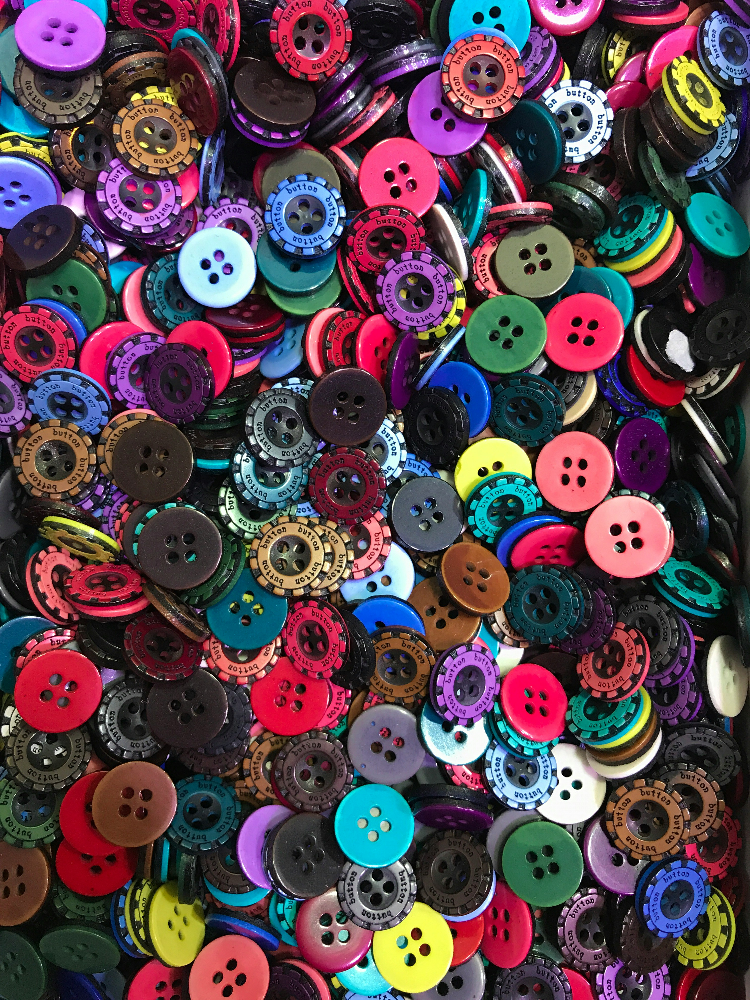

Barco:
Embarcación de estructura cóncava y, generalmente, de grandes dimensiones.

Besar:
Tocar u oprimir con un movimiento de labios a alguien o algo como expresión de amor, deseo o
reverencia, o como saludo.
Botón:
En una prenda de vestir, pieza, generalmente redonda y plana, que se introduce en un ojal para
abrochar.

Buitre:
Ave rapaz de cerca de dos metros de envergadura, con el cuello desnudo, rodeado de un collar
de plumas largas, estrechas y flexibles, cuerpo leonado, remeras oscuras y una faja blanca a
través de cada ala, que se alimenta de carne muerta y vive en bandadas.